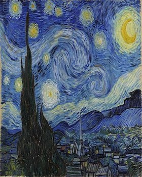

10 National Park FAQ
- Who is the director of the National Park Service?
- Shawn Benge, Deputy Director
- What government agency oversees the National Park Service?
- The National Park Service is a bureau of the Department of the Interior.
- How many employees are in the National Park Service?
- Permanent, temporary, and seasonal employees: Approximately 20,000
- How old is the National Park System?
- The National Park Service was created by an act signed by President Woodrow Wilson on August 25, 1916.
- How many areas are in the National Park System?
- The system includes 423 areas covering more than 85 million acres in every state.
- What is the largest national park site?
- Largest: Wrangell-St. Elias National Park and Preserve, AK, at 13.2 million acres
- How many people visit the national parks?
- Total recreation visitors to the national parks in 2019: 327,516,619.
- What is the most-visited national park?
- Blue Ridge Parkway at 14.1 Million annual visitors
- What is the National Park Service budget?
- FY 2017 Enacted: $2.932 billion
- Can I bring my pet to a national park?
- Some national parks welcome pets
- What state has the most national parks?
- California
Programing Languages
- Linux
- Apache
- MySQL
- PHP
- Javascript
National Parks
- Arches
- Badlands
- Carlsbad Caverns
- Denali
- Everglades
State Parks of Texas
- Abilene
- Big Bend
- Choke Canyon
- Davis Mountains
- Enchanted Rock

